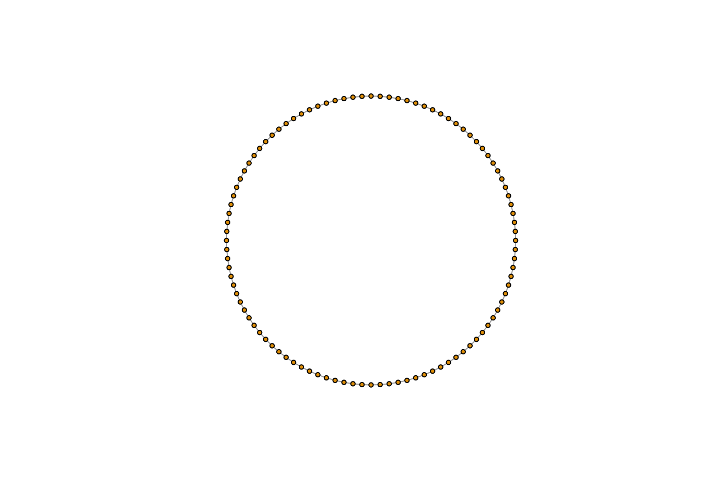
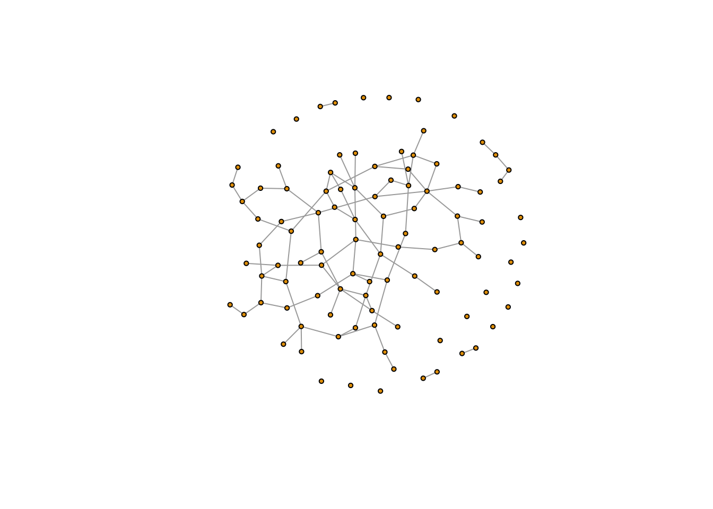
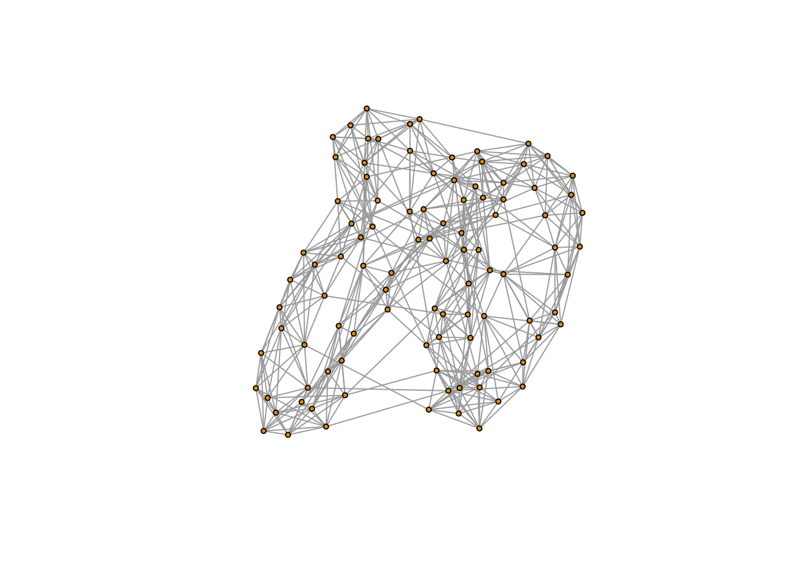
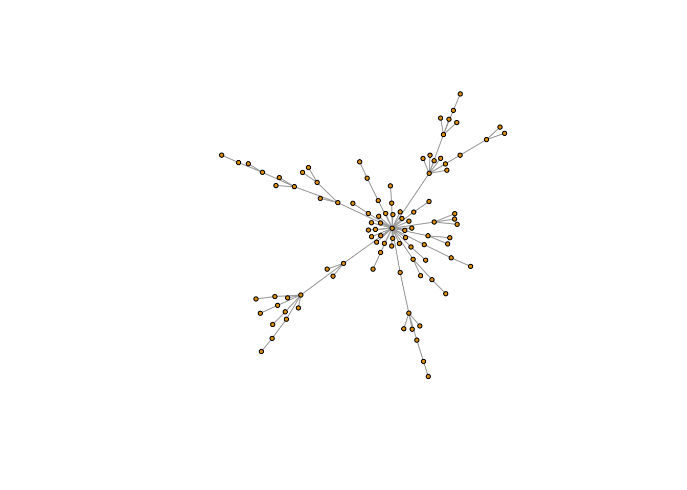
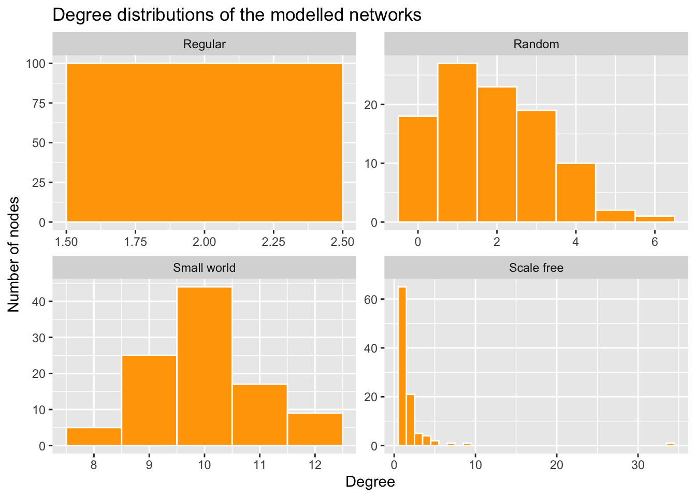
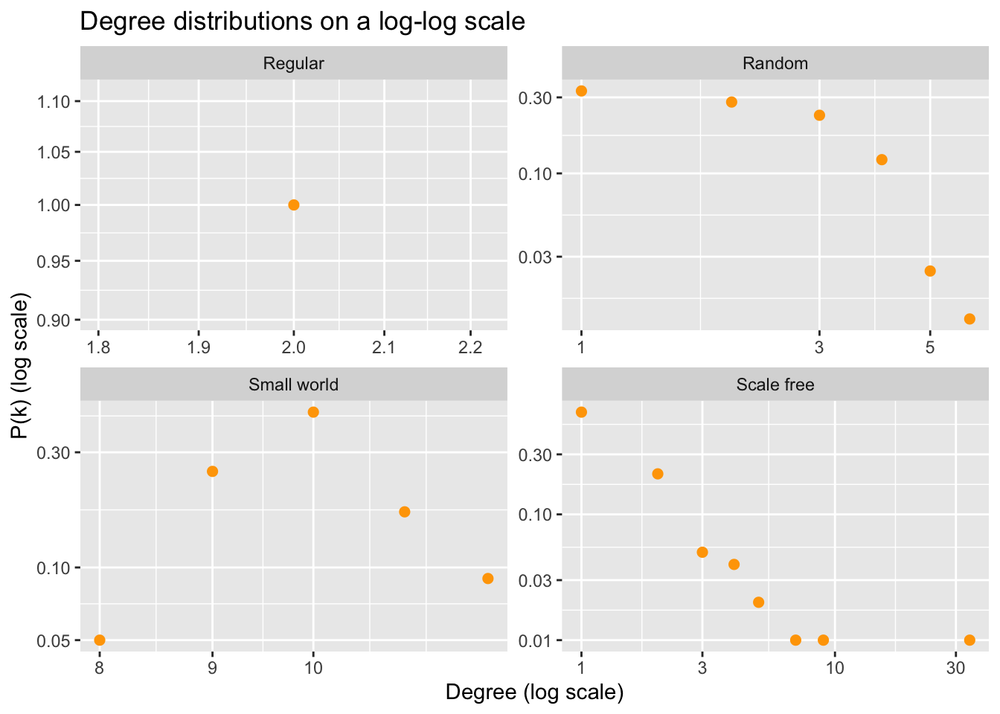
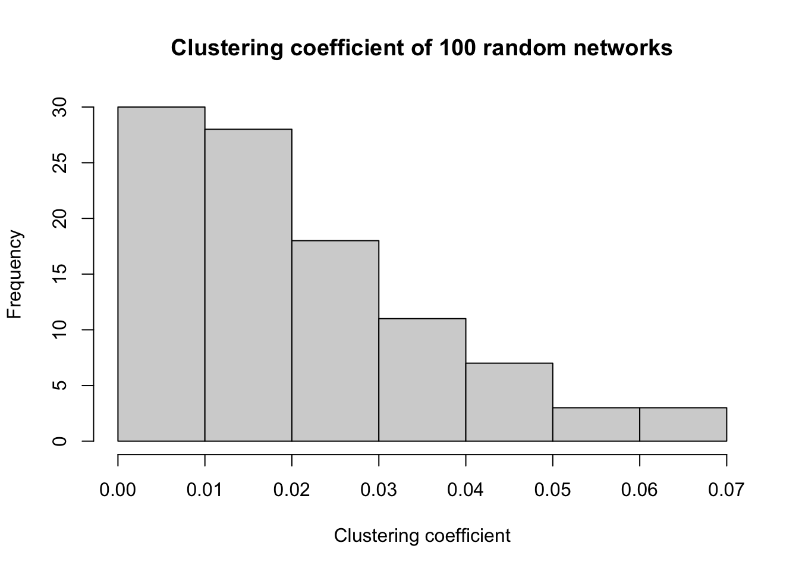

library(tidyverse)
library(igraph)
library(sand)
library(igraphdata)Network models in practice
Setup
Pay attention to the packages sand and igraphdata. The first one contains all the different network datasets used by (Kolaczyk and Csárdi 2020). Then, the second one contains network data to be used together with the igraph package. More information can be found here and here. Feel free to explore these network data on your own time.
Aims of the practical
Simulate network models
Analyse their key attributes
Compare them
igraph enables us to generate networks based on some of the key network models we discussed. I list below some of these functions:
sample_gnp()sample_smallworld()sample_pa()
Examples of modelled networks
So, let’s create three networks using these three functions with \(n = 100\) nodes each. Then, we can visualise and compare them.
Go to igraph’s webpage and familiarise yourselves with the syntax of these functions.
Importantly, just before you generate a network with one of the above three functions you will need to define a random seed for reproducibility reasons, e.g. set.seed(55).
This time we are saving each network in an object (e.g. g.reg), instead of plotting it straight away. We will need these objects below in order to calculate their attributes.
# Regular network
set.seed(55)
g.reg <- make_ring(100)
plot(g.reg, layout=layout_in_circle, vertex.label=NA, vertex.size = 3)
# Random network
set.seed(55)
g.rnd <- sample_gnp(n = 100, p = 0.02)
plot(g.rnd, layout=layout_with_fr, vertex.label=NA, vertex.size = 3)
# Small world network
set.seed(55)
g.sw <- sample_smallworld(dim = 1, size = 100, nei = 5, p = 0.05)
plot(g.sw, layout=layout_with_fr, vertex.label=NA, vertex.size = 3)
# Scale free network
set.seed(55)
g.sf <- sample_pa(n = 100, directed=FALSE, power = 1.5)
plot(g.sf, layout=layout_with_fr, vertex.label=NA, vertex.size = 3)
Network metrics
The plots are useful, but it is hard to compare networks only by looking at them. Let’s calculate some of the network measures we discussed and put them in a table. To do so efficiently, we first create a function, which takes a network as an input and returns its measures in a one-row table (a tibble). Have a look at the comments to see what each measure represents.
net_metrics <- function(g) {
tibble(
nodes = gorder(g), # number of nodes
edges = gsize(g), # number of edges
density = edge_density(g), # edges / maximum possible edges
mean_degree = mean(degree(g)), # average number of links per node
max_degree = max(degree(g)), # the most connected node. Hubs?
clustering = transitivity(g, type = "global"), # clustering coefficient (aka transitivity)
mean_distance = mean_distance(g), # average path length
diameter = diameter(g), # the longest shortest path
components = components(g)$no # number of disconnected parts. 1 = connected
)
}Please note that if a network is not connected (i.e. components > 1), mean_distance() and diameter() only consider the pairs of nodes which are connected with each other. Keep this in mind when you interpret the results below.
Now we can apply this function to all four networks. First, we put the networks in a list and give them names. Then, map_dfr() applies the function to each element of the list and stacks the results by row. The .id argument creates a column with the names of the list.
networks <- list("Regular" = g.reg,
"Random" = g.rnd,
"Small world" = g.sw,
"Scale free" = g.sf)
metrics <- map_dfr(networks, net_metrics, .id = "network")
knitr::kable(metrics, digits = 3, caption = "Key attributes of the modelled networks")| network | nodes | edges | density | mean_degree | max_degree | clustering | mean_distance | diameter | components |
|---|---|---|---|---|---|---|---|---|---|
| Regular | 100 | 100 | 0.020 | 2.00 | 2 | 0.000 | 25.253 | 50 | 1 |
| Random | 100 | 93 | 0.019 | 1.86 | 6 | 0.017 | 4.956 | 10 | 23 |
| Small world | 100 | 500 | 0.101 | 10.00 | 12 | 0.487 | 2.707 | 5 | 1 |
| Scale free | 100 | 99 | 0.020 | 1.98 | 34 | 0.000 | 4.111 | 10 | 1 |
Question: Have a look at the number of edges and the mean degree of the four networks. What is your interpretation of the differences?
Then, compare the clustering coefficient and the mean distance. Do the results match what we discussed during the lecture?
Degree distributions
The degree distribution is a key characteristic of the network models. We will visualise it in two different ways. First, we need a data frame with the degrees of all nodes for each network.
degrees <- map_dfr(networks, ~ tibble(degree = degree(.x)), .id = "network") %>%
mutate(network = factor(network, levels = names(networks))) # keeps the order of the list
glimpse(degrees)Rows: 400
Columns: 2
$ network <fct> Regular, Regular, Regular, Regular, Regular, Regular, Regular,…
$ degree <dbl> 2, 2, 2, 2, 2, 2, 2, 2, 2, 2, 2, 2, 2, 2, 2, 2, 2, 2, 2, 2, 2,…The first plot is a histogram. We use facet_wrap() to get one panel per network. scales = "free" allows each panel to have its own axes, as the networks might have very different degree ranges.
ggplot(degrees, aes(x = degree)) +
geom_histogram(binwidth = 1, fill = "orange", colour = "white") +
facet_wrap(~ network, scales = "free") +
labs(x = "Degree", y = "Number of nodes",
title = "Degree distributions of the modelled networks")
The second plot shows the same information on a log-log scale. We first calculate the share of nodes (\(P(k)\)) with each degree \(k\). A power law (\(P(k) \propto k^{-\gamma}\)) would appear as a straight line on this scale. Please note that we exclude nodes with degree \(0\) (i.e. isolated nodes), because we cannot take the logarithm of \(0\).
degrees %>%
filter(degree > 0) %>% # no logs of zero
count(network, degree) %>% # how many nodes for each degree
group_by(network) %>%
mutate(p = n / sum(n)) %>% # share of nodes: P(k)
ggplot(aes(x = degree, y = p)) +
geom_point(colour = "orange", size = 2) +
scale_x_log10() +
scale_y_log10() +
facet_wrap(~ network, scales = "free") +
labs(x = "Degree (log scale)", y = "P(k) (log scale)",
title = "Degree distributions on a log-log scale")
Question: Which network has the longest tail, i.e. a few nodes with a much higher degree than the rest? What does this mean in terms of hubs? What is the shape of the distribution for the random network? Why do all nodes of the regular network have the same degree?
Be careful with the log-log plot though. We only have (100) nodes and, therefore, few distinct degree values.
Replicating the simulation
Until now we looked at one network for each model. However, these networks are random draws. If we had used a different seed, we would have got a (slightly) different network and different values for the measures above. So, how can we be sure that the differences we observe between the models are real and not just due to the specific draw?
The answer is to repeat the simulation many times and see how much the measures vary. The replicate() function does exactly this. It takes a number of repetitions and an expression, and it runs the expression this many times. Each time, any random step in the expression gives a new draw.
Let’s start with a simple example. We generate \(100\) random networks and calculate the clustering coefficient of each one. Please note that we set the seed once, just before replicate(). The \(100\) networks are different from each other, but the whole set is reproducible. If we had put set.seed() inside the expression, we would have got the same network \(100\) times!
set.seed(55)
clustering.rnd <- replicate(100, transitivity(sample_gnp(n = 100, p = 0.02)))
length(clustering.rnd) # one value per network[1] 100summary(clustering.rnd) Min. 1st Qu. Median Mean 3rd Qu. Max.
0.00000 0.00000 0.01786 0.01930 0.02785 0.06977 hist(clustering.rnd,
main = "Clustering coefficient of 100 random networks",
xlab = "Clustering coefficient")
As you can see, there is quite variation within \(100\) random networks.
References
Kolaczyk, Eric D, and Gábor Csárdi. 2020. Statistical Analysis of Network Data with r. Second. Vol. 65. Springer.